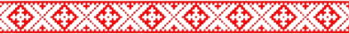
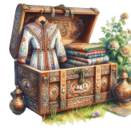
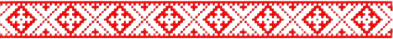

Негоже за один день удалую свадьбу проводить. После официального вечера приглашаем продолжить веселье хлебосольное, шумное да душевное!
Вас ждут русские забавы, сытные угощения, песни под стать настроению да разговоры дружеские.
Полевая улица, 1,
село
Александровка
(дом за банкетным залом)
Ждем вас радушно к обеду,
сбор гостей в 12:00

Приглашаем вас облачиться в русские народные наряды — сарафаны расписные, рубахи-косоворотки с вышивкой, платки узорчатые. А коль душа ваша ближе к традициям иного народа — надевайте свой национальный наряд с гордостью! Красота многолика, и на нашем празднике всякому убранству рады.
А ещё, друзья, ведать надобно: на месте том есть сауна жаркая да бассейн прохладный. Коли захотите телушку распарить да водицей окатиться — берите с собой купальные наряды, полотенца и шлёпанцы.
Так что в сундучок свой дорожный положите:
1. Наряд праздничный,
2. Купальные принадлежности,
3. Обувку удобную,
4. Улыбку широкую — её-то уж точно не забудьте!


Какая же русская пляска без вашей любимой музыки? Нам гуляров настроиться надобно. Поведаете, под какие мотивы ваши ноги сами в пляс пускаются?
Заказать песнюЧтоб нам знать, сколько душ за стол садить да сколько блинов напечь, отпишись, будешь ли на нашем пиру.
Ждём твой ответ до 15 августа, званый-перезваный!
Заполнить анкетуА где всё начиналось?
Вернуться к первому дню ♡